3D Anaglyph Images of Dinosaurs

Put on your red-cyan glasses and travel back in time with Warpi.
Start the Free 3D Preview ↓Red-cyan 3D glasses required.


A closer look at Brachiosaurus in a prehistoric lake.
Read about Brachiosaurus — a giant plant-eater
Brachiosaurus: A Long Neck and a Giant Appetite
Brachiosaurus was an incredible dinosaur and it was truly enormous. In fact, it was one of the largest creatures ever to walk the Earth!
One of the most remarkable things about Brachiosaurus was its long neck, which it used to reach high into the trees and munch on leaves. With those long necks, they could feast on vegetation that other dinosaurs couldn't reach, like a giant salad bar.
Brachiosaurus had a relatively small head compared to its massive body and long neck. This giant ate plants rather than hunting other animals for meat.

Explore another Brachiosaurus scene before continuing the journey.
Read about Brachiosaurus — standing beside a giant
Brachiosaurus: Standing Beside a Giant
Imagine standing next to a Brachiosaurus—its head would be high up in the trees, and you'd need a telescope to see its eyes! These magnificent creatures would have towered above you.
They also had long tails extending behind their huge bodies. Picture the whole animal, from the tip of its tail to its tiny head high above. What an impressive sight from our time machine!
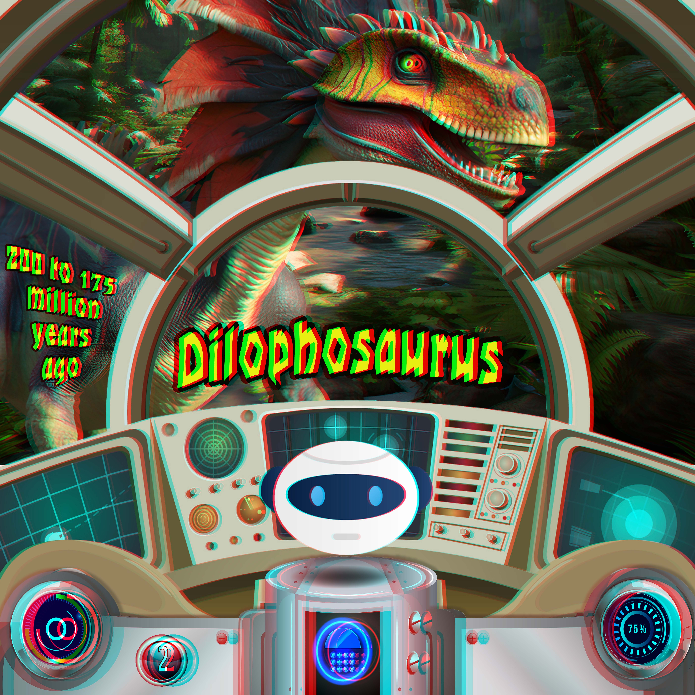
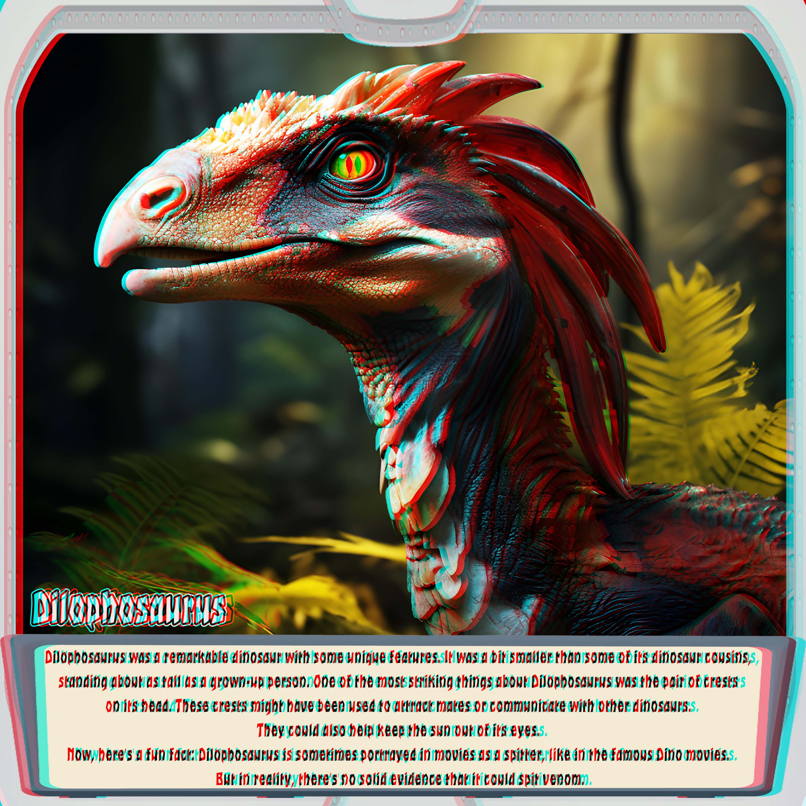
Meet Dilophosaurus — a dinosaur with a distinctive double crest.
Read about Dilophosaurus — crests and movie myths
Dilophosaurus: Two Crests and a Big-Screen Myth
Dilophosaurus was a remarkable dinosaur with some unusual features. It was much bigger than its movie appearances might suggest: this impressive predator could reach about 6 metres (20 feet) in length!
One of its most striking features was the pair of crests on its head. These may have helped it display to other dinosaurs, perhaps to attract a mate. Scientists are still exploring exactly how those crests were used.
Now, here's a fun fact: Dilophosaurus is sometimes shown in movies as a venom-spitting dinosaur. But there is no solid evidence that it could spit venom. Its powerful jaws made it a formidable predator without that movie trick!
Our illustrations bring the adventure to life with imaginative colours and features. The decorative neck frill is an artistic addition, not an established feature of the real dinosaur.
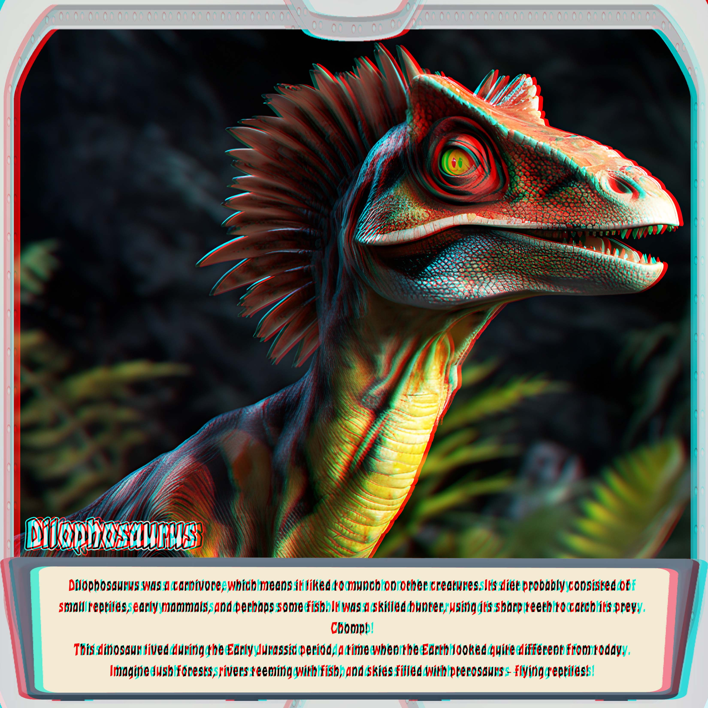
Discover what Dilophosaurus ate and the prehistoric world it lived in.
Read about Dilophosaurus — food and the Early Jurassic
Dilophosaurus: A Meat-Eater in the Early Jurassic
Dilophosaurus was a carnivore, which means it ate other animals. Its sharp teeth and powerful jaws helped it tackle its meals. Chomp! Scientists cannot give us a complete menu, but this dinosaur was well equipped for a meat-eating life.
This dinosaur lived during the Early Jurassic period, a time when the Earth looked quite different from today. Imagine travelling with Warpi to a prehistoric landscape of rivers and vegetation, with pterosaurs — flying reptiles — overhead.
Look beyond the dinosaur in this 3D picture and imagine the wider world outside our time-machine windows. What might we discover at the next stop?
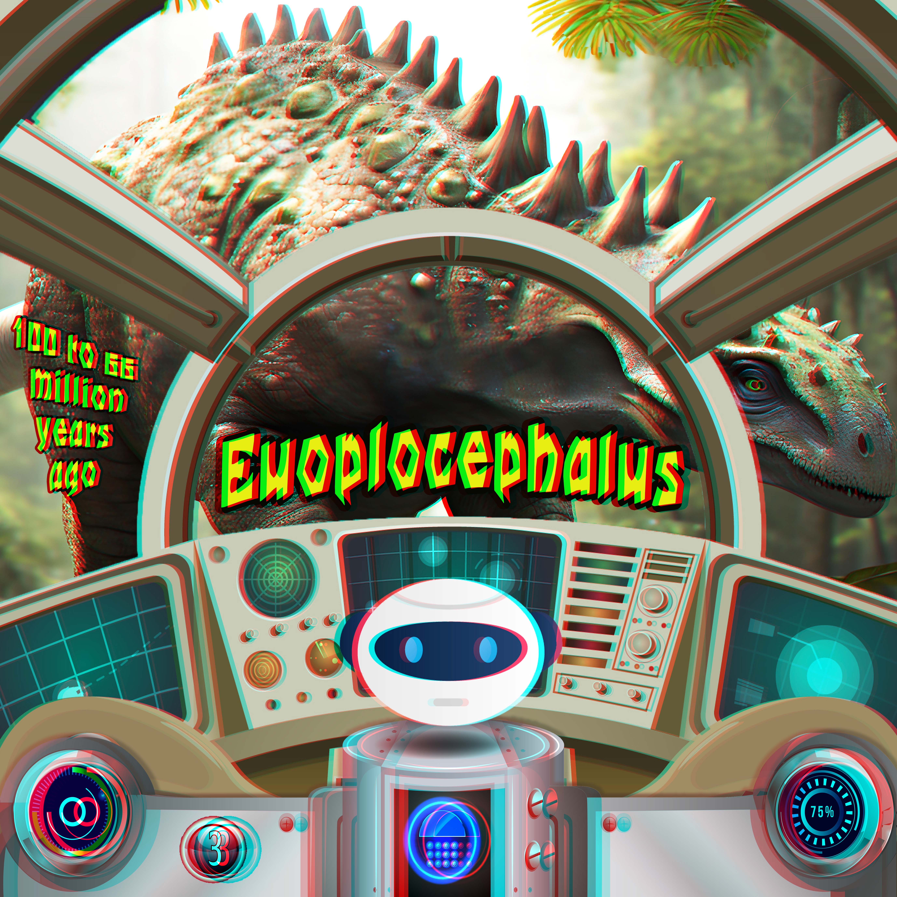
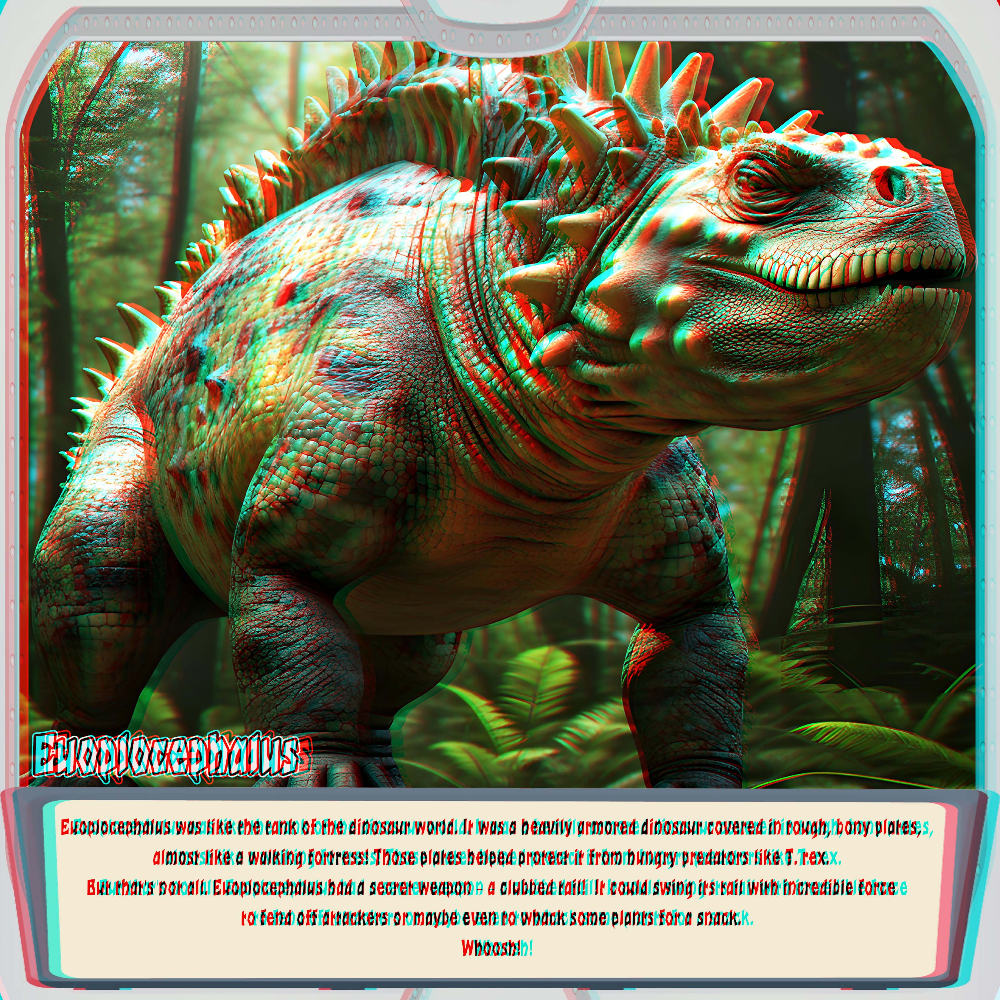
Meet Euoplocephalus — a plant-eating dinosaur with impressive armor.
Read about Euoplocephalus — armor and a clubbed tail
Euoplocephalus: A Walking Fortress
Euoplocephalus was like the tank of the dinosaur world! Tough, bony plates formed armor across its body, giving this plant-eater the appearance of a walking fortress.
But that wasn't all. At the end of its tail was a heavy, bony club. Imagine that tail swinging from side to side. Whoosh! It was a striking feature of this armored dinosaur.
Scientists study how these tail clubs were used. They may have helped against attackers, and evidence from related armored dinosaurs suggests they could also have been used in clashes with one another.
This is an imaginative illustration. The dramatic spikes and other details add to the adventure; the artwork is not an exact scientific reconstruction.
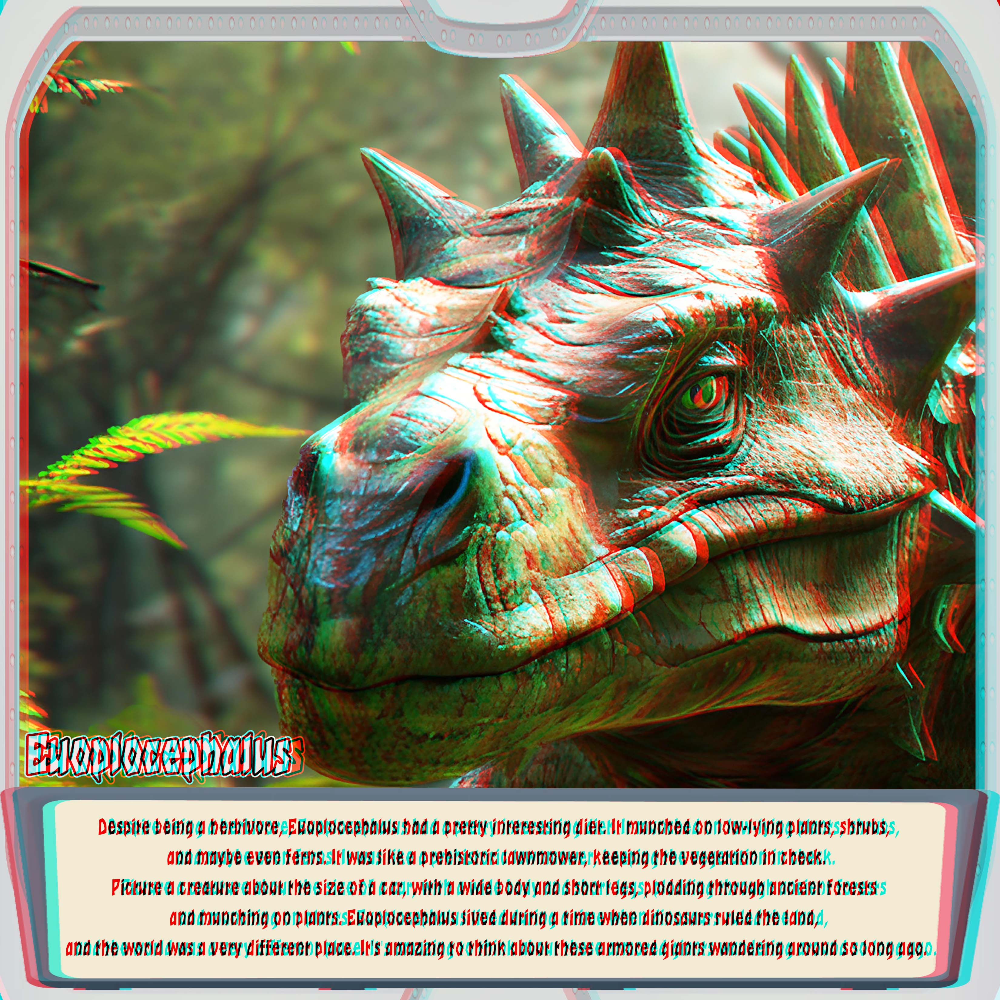
Take a closer look at Euoplocephalus and discover its plant-eating life.
Read about Euoplocephalus — plants and prehistoric life
Euoplocephalus: A Plant-Eater Close to the Ground
Behind all that armor was a herbivore—a dinosaur that ate plants. With its head close to the ground, Euoplocephalus could reach low-growing vegetation. Think of it as a prehistoric lawnmower, stopping for a leafy snack along the way!
Picture a broad, heavy body carried on four sturdy legs. This dinosaur didn't need to stretch high into the treetops like Brachiosaurus. Its meals were much closer to its feet.
Euoplocephalus lived during the Late Cretaceous period. Imagine watching this armored plant-eater wander past the time machine, pausing to feed while Warpi points out its unusual features. What a visitor from another world!
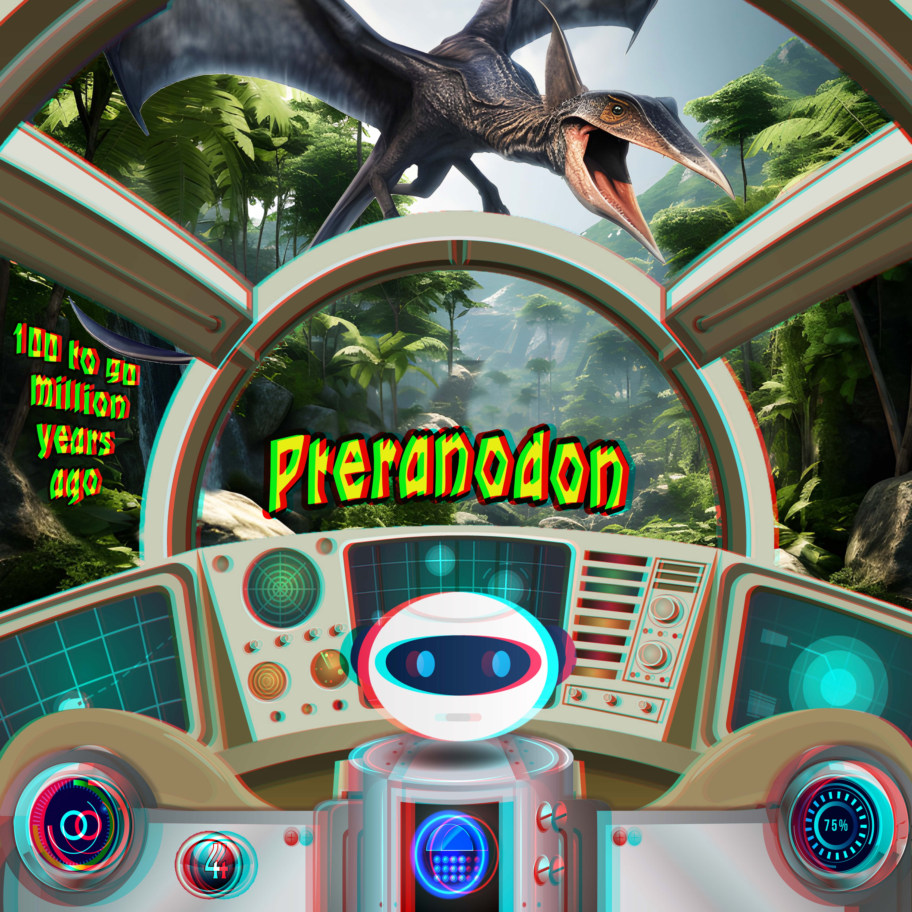
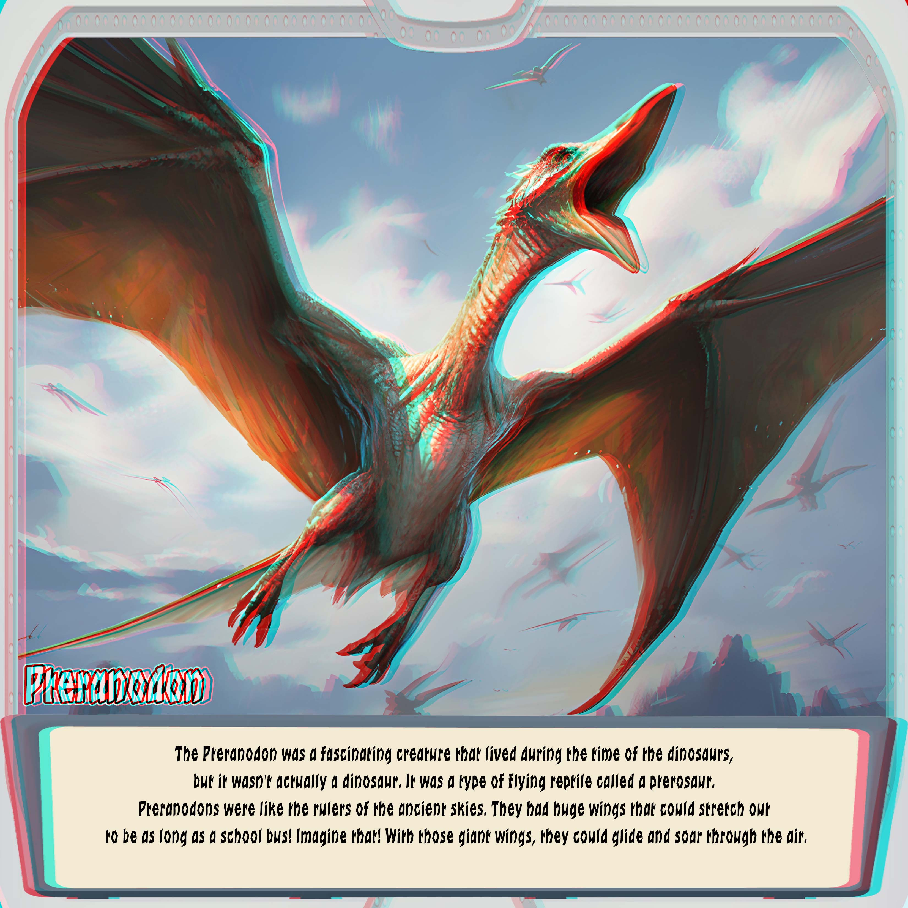
Meet Pteranodon — spread your imagination and explore the prehistoric skies.
Read about Pteranodon — wings and prehistoric flight
Pteranodon: A Flying Reptile from the Age of Dinosaurs
Pteranodon was a fascinating creature that lived during the time of the dinosaurs, but wasn't actually a dinosaur. It was a type of flying reptile called a pterosaur. So although people often call it a “flying dinosaur,” it belonged to a different group of prehistoric animals.
Imagine looking out of Warpi's time machine and seeing those enormous wings overhead! Pteranodon longiceps could have a wingspan of about 6 metres (20 feet). Stretch out your arms and imagine just how much wider that would be.
With its long wings, Pteranodon could soar over ancient seas. Look at this 3D picture and imagine following it through the sky, with the world far below and the next adventure waiting beyond the clouds.
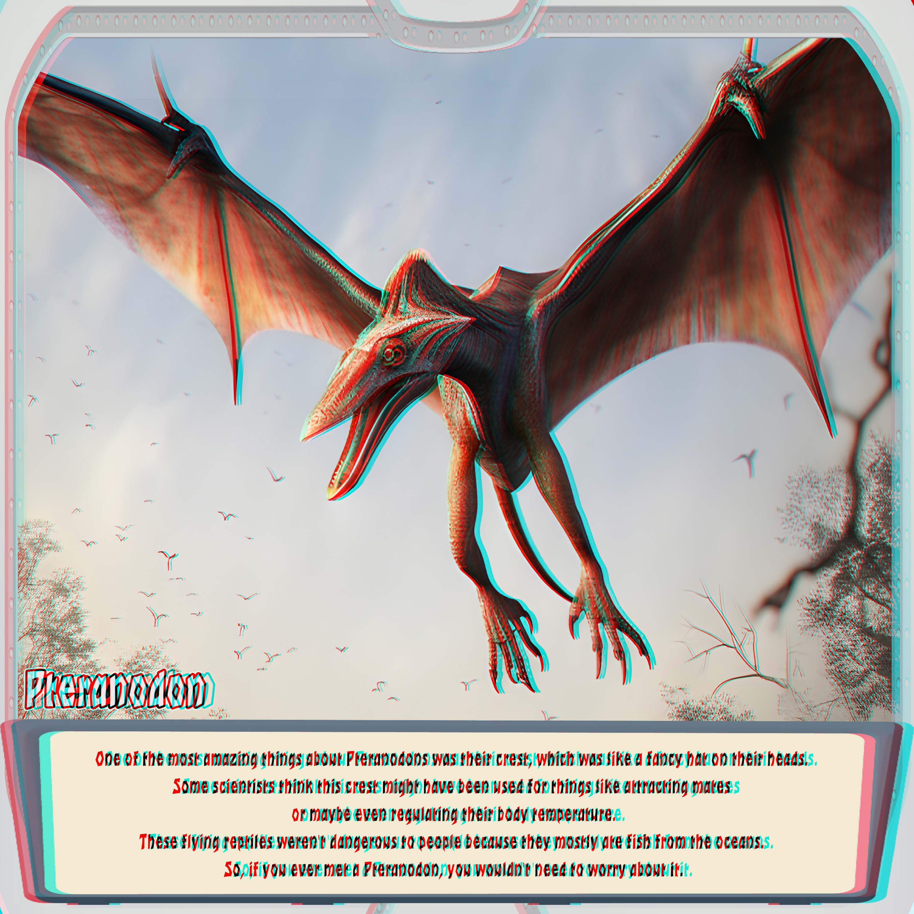
Take a closer look at Pteranodon and discover its crest and fish-eating life.
Read about Pteranodon — its head crest and fishy meals
Pteranodon: A Dramatic Crest and a Taste for Fish
One of the most amazing things about Pteranodon was its crest, like a fancy hat on its head! In Pteranodon longiceps, this striking crest pointed backward. Scientists explore how pterosaur crests may have helped with display, perhaps attracting mates or recognising others of their kind.
Fish were on the menu for this flying reptile. Imagine it soaring above an ancient sea, searching the water for its next meal. Its long, toothless beak was quite different from the toothy jaws of the meat-eating dinosaurs we met earlier.
Pteranodon lived long before people, so a real-life meeting wasn't possible. But aboard our imaginary time machine, we can watch it glide past the windows. Keep your glasses on — what a view of prehistoric life!
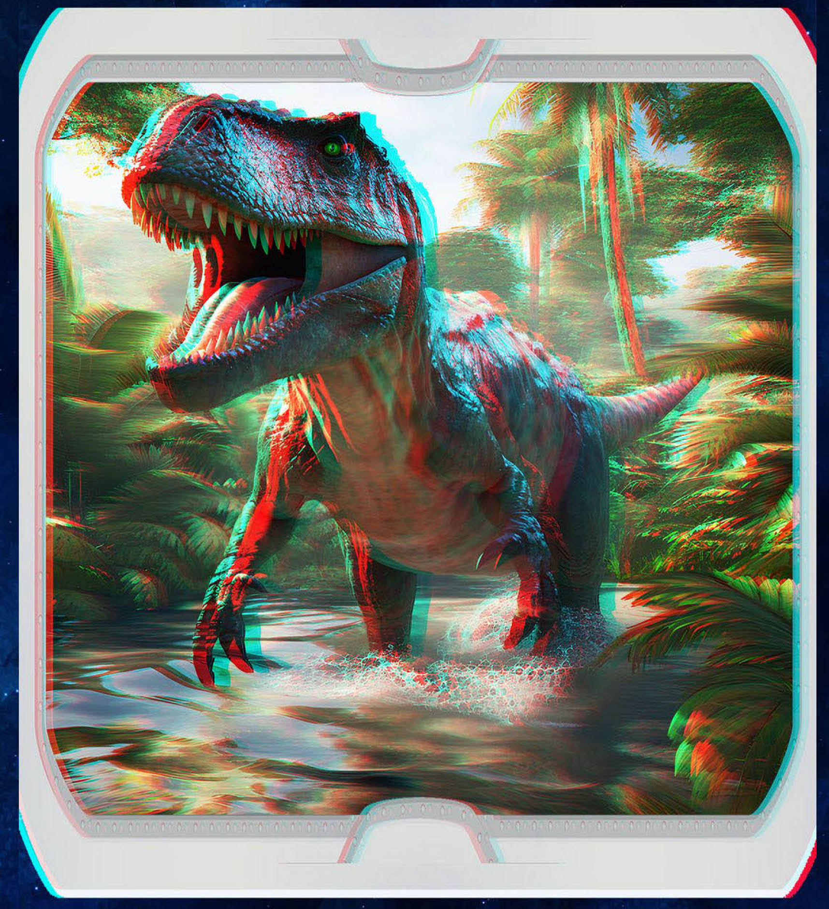
T. Rex 3D Picture — Meet Tyrannosaurus Rex
One last roar before you go! Put on your red/cyan glasses and try fullscreen to see this Tyrannosaurus rex picture at its largest. This is a glimpse of the encounters still waiting in the full book.
Read about T. rex — teeth, size and prehistoric life
A Giant Outside the Time-Machine Window
Imagine Warpi bringing the time machine to a gentle stop. Beyond the window, a huge head appears between the trees. A mouth opens, revealing rows of teeth. Meet Tyrannosaurus rex, usually called T. rex — one of the most recognisable meat-eating dinosaurs. Our last 3D dinosaur picture gives you a glimpse of this remarkable animal before the free preview ends.
How Big Was Tyrannosaurus Rex?
A large T. rex could reach around 12 metres (40 feet) in length. Imagine measuring that distance from its nose all the way to the end of its tail! It walked on two powerful back legs, while its arms looked surprisingly small beside its enormous body. From our imaginary cockpit, even one passing dinosaur would be quite a sight.
What Did T. Rex Eat?
T. rex was a carnivore, which means it ate other animals. Its strong jaws and serrated teeth helped it tear through meat and crush bone. Those teeth were much more than a frightening smile: they were tools for feeding. Look closely at the open jaws in the illustration and imagine the scale of the real animal.
When and Where Did It Live?
Tyrannosaurus rex lived around 68–66 million years ago, near the end of the Late Cretaceous period, in what is now western North America. Warpi needs the time machine to visit each animal in its own prehistoric world.
Explore This T. Rex Picture in 3D
These overlapping red and cyan outlines are part of the anaglyph effect. With red and blue glasses of the correct red/cyan type, the two views create a sense of depth. Choose “View fullscreen”, keep the whole picture visible, and imagine looking through the window. Ready for more? Warpi has six further encounters waiting in the complete dinosaur ebook, including T. rex.
Six More Encounters in the Complete Book
This T. rex is just a teaser. Continue travelling with Warpi to visit these six dinosaurs in their own prehistoric worlds, with more 3D illustrations and stories about when they lived and what they ate.
- Spinosaurus
- Stegosaurus
- Struthiomimus
- Tyrannosaurus rex (T. rex)
- Triceratops
- Velociraptor
Your next stop is waiting. Shall we go?
Digital ebook. Red/cyan 3D glasses are not included.
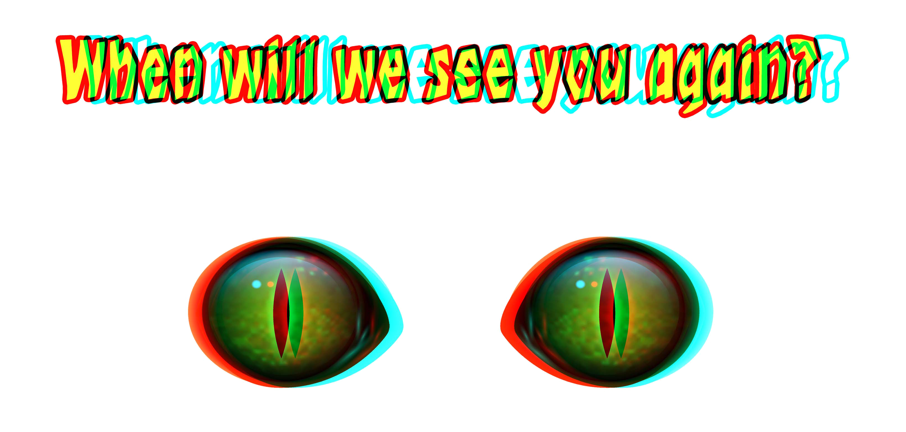
Use the ← and → arrow keys while browsing the preview. Open the reading panel beneath a dinosaur picture to read its accompanying text.
Your Dinosaur Adventure with Warpi
Climb aboard the time machine with Warpi, your robot pilot. Explore anaglyph images of dinosaurs as you travel through prehistoric time. Meet the long-necked Brachiosaurus, the meat-eating Dilophosaurus and the armored Euoplocephalus. Then look up to meet Pteranodon, a flying reptile from the age of dinosaurs, with illustrated pages about their worlds and ways of life.
3D Pictures for Red and Blue Glasses
To see the depth effect, you need red/cyan anaglyph 3D glasses, often called red and blue glasses. Regular cinema glasses will not work with these images. Without the correct glasses, the red and cyan outlines will appear doubled.
Try fullscreen for a more immersive view. For the best viewing experience, use a laptop or desktop and select “View fullscreen”. Each picture keeps its proportions and the complete illustration stays visible. You can also explore the preview on a phone or tablet.
Enjoy the opening of Dinosaur Anaglyph 3D Adventure in this free online preview. This is a sample of the book; the complete journey continues in the full ebook. No printing needed.
Explore 17 preview pages, including a final T. rex teaser. 3D glasses are not included.
Discover the depth behind the pictures
How Do 3D Glasses Work?
These red cyan 3D images combine two slightly different views using red and cyan colour channels. The coloured lenses filter the image so that each eye receives a different view. Your brain combines those views to create a sense of depth.
Which glasses do I need for these dinosaur pictures?
Use red/cyan anaglyph glasses. These are often described as red and blue 3D glasses. Follow the intended lens orientation: red over the left eye and cyan over the right. Polarized cinema glasses use a different system and will not reveal the depth in these pictures.
Can I view the pictures without 3D glasses?
Yes, you can browse the preview, but you will see overlapping red and cyan outlines. The glasses are needed to experience the intended depth effect.
Why try the fullscreen view?
Fullscreen gives the book pages more space while keeping their proportions intact. The larger view can make details, text and the depth effect easier to appreciate. The result also depends on your screen, glasses and viewing distance.
The expandable reading text and farewell message are hidden in fullscreen to leave more room for the illustration. Exit fullscreen to read the text beneath the picture and find the links to the complete ebook.
Who is Warpi, and where does the time machine go?
Your Robot Pilot Through Prehistoric Time
Warpi guides you from the opening instructions into the time-travel capsule. The story travels through time to meet dinosaurs in the periods when they lived.
Each new encounter starts aboard the time machine, followed by two illustrations with information about the animal. In this preview, you can meet Brachiosaurus, Dilophosaurus and Euoplocephalus, plus the flying reptile Pteranodon and a final T. rex teaser.
Keep your glasses on
Watch Anaglyph 3D Videos
Take a short detour into tunnels and space with three of my favourite anaglyph 3D Shorts. Watch them here or open them on YouTube. Use your red/cyan glasses and try each video's fullscreen control for a larger view.
Galactic Descent
Vintage Sun & Spinning Moon
Your journey has only just begun
A Dinosaur Book with 3D Glasses
Your journey through prehistoric time doesn't have to end here. Explore dinosaur 3D pictures, watch anaglyph 3D videos and travel with Warpi to meet more remarkable creatures. These images are designed for red/cyan glasses, often called red and blue 3D glasses.
From the long neck of Brachiosaurus to the crests of Dilophosaurus, the armor of Euoplocephalus and the wings of Pteranodon, every stop reveals something different. Enjoyed the free preview? Continue the adventure in the full Dinosaur Anaglyph 3D Adventure ebook, with more illustrated encounters with Spinosaurus, Stegosaurus, Struthiomimus, Tyrannosaurus rex, Triceratops and Velociraptor.
This is a digital book. Red/cyan 3D glasses are not included. Book links open in a new tab.
Keep exploring with your 3D glasses
Explore More 3D Pictures with Glasses
Discover a free gallery of 3D anaglyph art featuring flowers, animals, fantasy scenes and vintage portraits. Put on your red-cyan 3D glasses—often called red-blue glasses—and explore the images in fullscreen.